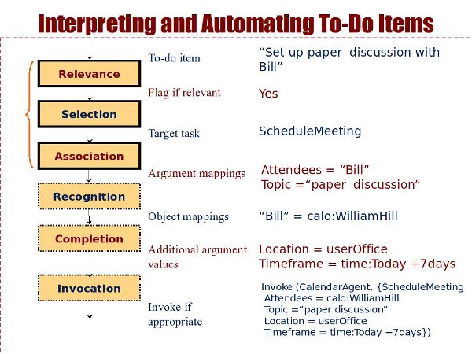

|
|

|
| Assisting Users with To-Do Lists | |
Research
To-do lists have been found to be the most popular personal information management tools, yet there is no automated system to interpret and act upon them when appropriate on behalf of the user.
There are many challenges in interpreting to-dos. First, to-dos are stated in natural language while agent capabilities use a formal representation that is far from what a user would state. Second, to-do lists contain many entries that are personal items that do not lend themselves to automation by agents or services. Third, to-dos tend to be short and as a result often omit important information necessary to specify the task. Part of our work has been an extensive analysis of to-do list entries obtained from users so we could better understand these challenges.
We are developing Beamer, a system for interpreting to-do lists by mapping items to structured tasks that agents can perform on behalf of users. Since the format of to-do entries is not very amenable to natural language processing tools that can parse and create a structured interpretation, it is hard to use existing and commonly-used natural language techniques. Our approach is to exploit paraphrases of the target tasks that the agents can perform and that specify how the free-text maps to the task arguments. As users manually assign to-do to agents for automation, our system improves its performance by learning new paraphrase patterns.
Beamer processes to-dos in a six-phase process, shown below. The left side shows the kind of result expected from each step, and the right side gives an example.
Relevance involves determining whether a to-do list entry is relevant to any of the agent capabilities. That is, whether the to-do entry is within the scope of the tasks that the system can automate for the user. If the system has good performance in this step, it can help the user by highlighting those entries in the to-do list so that the user is aware that there are agents that could automate them. Selection involves finding the agent capability (or target task) that is appropriate for automating a given to-do entry. Note that the system may generate several candidates. If the system has good performance in this step, the top ranked candidate can be shown to the user as a possible way to automate the entry. Other candidates, and there should not be too many, can be shown as alternatives to the user as a pull-down menu. Association will determine which chunks of the to-do entry text correspond to which arguments in the target task. Good performance in this step would allow the system to have the menu to task the agent pre-filled by those mapped arguments, requiring little or no editing from the user to task the agent. Recognition finds an object in the system that corresponds to the text chunk of an argument. For example, the to-do entry may contain the first name of a person and the recognition phase would find that person's formal representation, which will allow the agent internally to access email addresses or other information useful for the task. Notice that not all arguments can be mapped to formal objects. An example is the topic of a meeting, which is only useful (at least in our work) to the other human attendees. Completion involves completing the other argument values not included in the to-do list entry, either by using default values, typical values learned for each user, or values inferred from the user's context (e.g., other meetings, emails, etc.) Invocation involves deciding whether the agent should be invoked, which can be done with the user's explicit consent or using some measure of adjustable autonomy for the task.
Notice that the automation of each of these steps can be turned into an interface extension that can be useful to the user in its own right.
Our evaluations have shown that Beamer works remarkably well, and can handle the concise expressions and idiosyncratic grammar of to-dos.